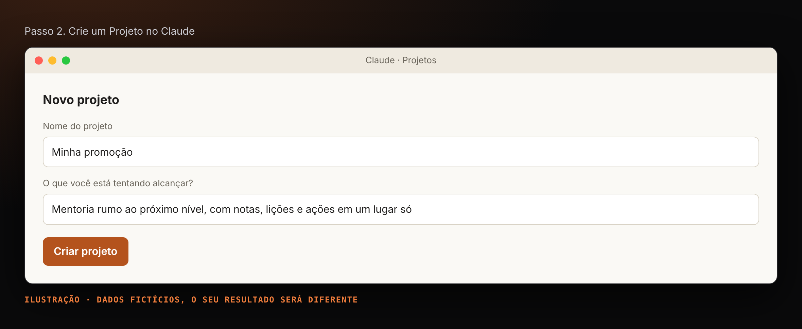
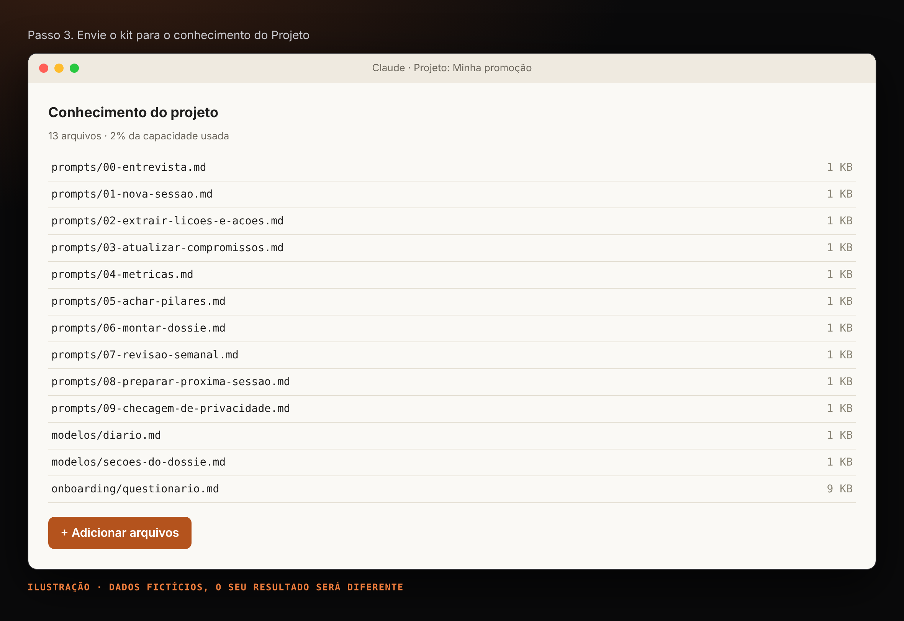
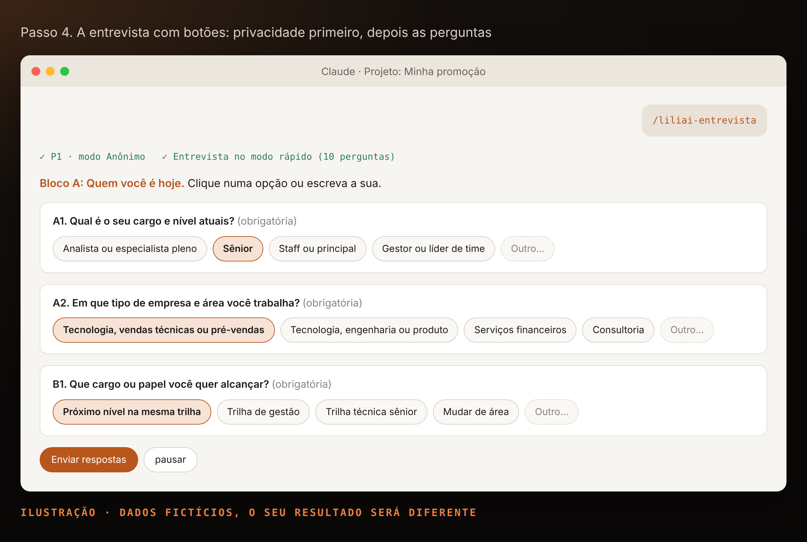
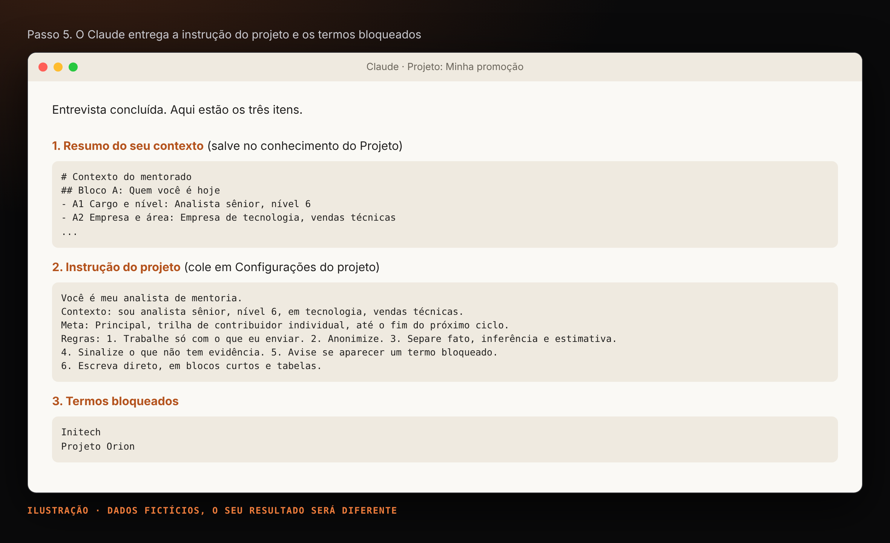
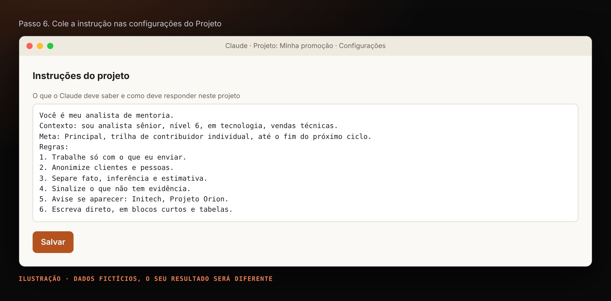
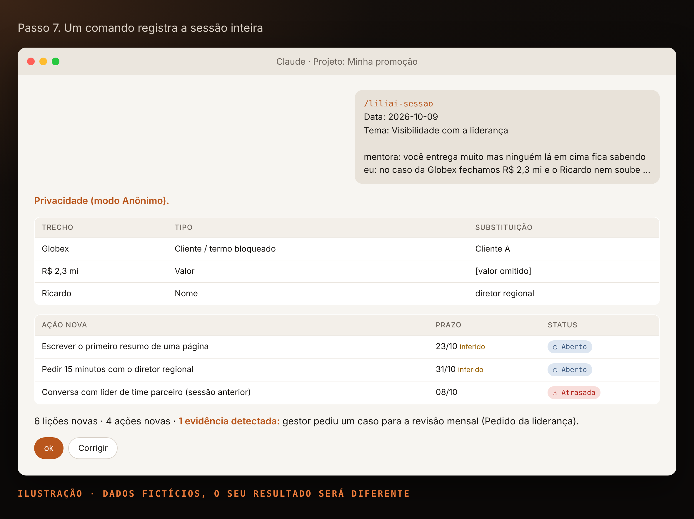
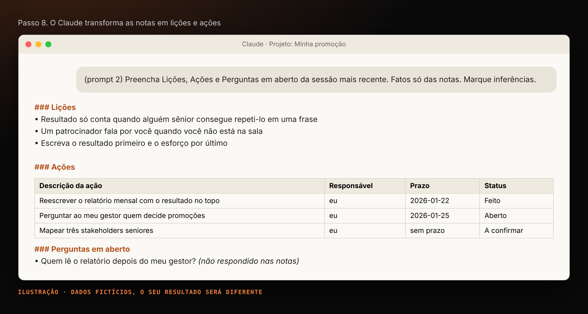
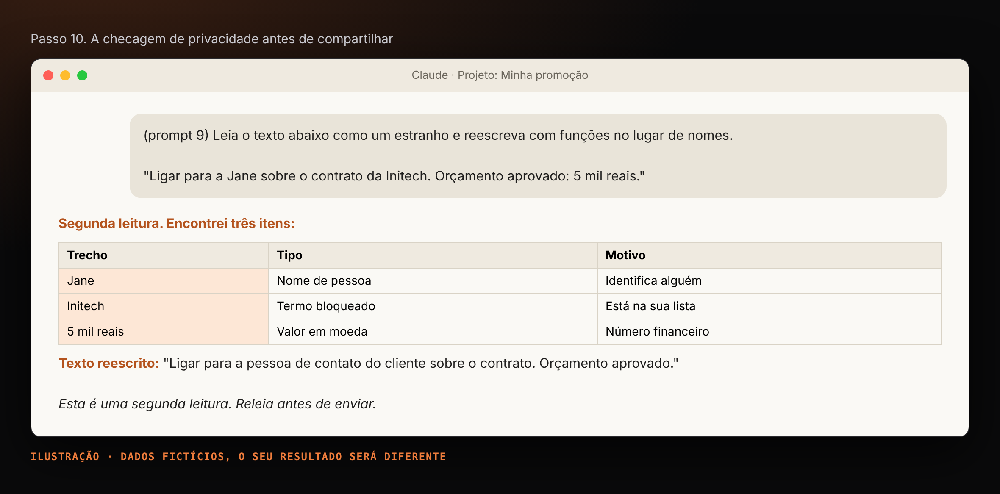
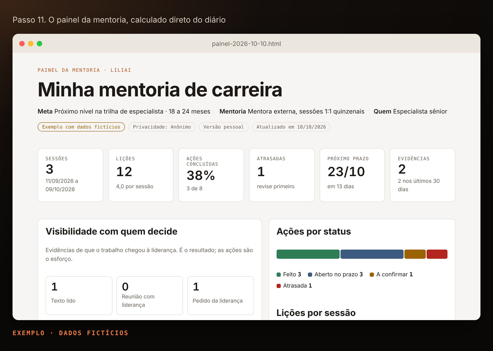

Lili.AI
A mentoria falou. O Claude anotou.
Cinco comandos para o Claude que transformam cada sessão de mentoria em lições, ações com prazo e evidências de que o seu trabalho chegou em quem decide. Porque "eu lembro depois" não é estratégia de carreira.
Projeto não oficial, feito pela comunidade. Não tem vínculo com nenhum programa de mentoria, empresa ou mentor. Use com as suas próprias notas e siga a política da sua empresa para ferramentas de IA.
O ciclo
Cinco comandos, um arquivo
Todo comando lê e devolve o mesmo diario.json, que fica no seu Projeto. Você monta uma vez; depois, cada sessão leva cerca de dez minutos.
/liliai-entrevistaMeta, privacidade e o diário inicial.
/liliai-sessaoLições, ações, evidências e métricas.
/liliai-semanaAtrasos, evidências e a pauta da próxima.
/liliai-painelTudo num painel, pessoal ou anonimizado.
/liliai-privacidadeTexto checado e anonimizado.
O que é medido
Esforço e resultado, separados
Ações
O que você combinou fazer: responsável, prazo e status. O painel mostra o que está em dia e o que atrasou.
Evidências de visibilidade
O que mudou em quem decide: um texto seu foi lido, você conseguiu agenda, a liderança pediu algo seu. É isso que pesa numa promoção.
Fase 1
Montar uma vez
passos 1 a 6 · ~15 minAs telas são ilustrações com dados fictícios. Algumas mostram a versão por prompt colado; com as skills, você digita o comando do passo.
-
1
Baixe o kit e instale as skills
- No GitHub, clique em Code › Download ZIP e descompacte.
- Abra
skills/dist/: são cinco arquivos.zip, um por comando. - No Claude, abra Configurações e a área de Skills (em Capabilities na maioria dos planos). Envie os cinco zips e ative.
- Teste: digite
/liliainuma conversa. Os cinco comandos devem aparecer.
Sem Skills no plano? Use os prompts da pasta
prompts/. Veja Sem skills. -
2
Crie um Projeto no Claude
Abra Projetos › Novo projeto e dê o nome da sua meta, por exemplo "Minha promoção".

Ilustração · dados fictícios -
3
Envie os arquivos de apoio
Arquivo Por quê onboarding/questionario.mdAs perguntas da entrevista, com as opções dos botões modelos/painel.htmlO modelo visual do painel prompts/Só se você não instalou as skills 
Ilustração · dados fictícios -
4
Faça a entrevista:
/liliai-entrevistaPrimeiro a privacidade, com sim ou não. Depois você escolhe o modo na P2: rápido (11 perguntas, cerca de 5 minutos) ou completo (38). No rápido, dá para completar o resto depois com "completar entrevista". As respostas vêm em botões, sempre com um campo livre.
Experimente · pergunta P1
Você autoriza manter dados reais do seu contexto dentro do seu Projeto, para respostas mais precisas?
Clique numa opção para ver o efeito.

Ilustração · dados fictícios -
5
Receba os quatro itens
Bloco O que fazer Resumo do contexto Salvar no conhecimento como contexto.mdInstrução do projeto Colar no passo 6 Termos bloqueados Nada: já estão na instrução diario.jsoninicialSalvar no conhecimento como diario.json
Ilustração · dados fictícios -
6
Cole a instrução
Copie a instrução para Configurações do projeto › Instruções e salve. A montagem acabou.

Ilustração · dados fictícios
Fase 2
Usar
passos 7 a 12 · ~10 min por sessão-
7
Registre a sessão:
/liliai-sessaoLogo depois da sessão, envie numa mensagem só:
/liliai-sessao Data: 2026-10-09 Tema: Visibilidade com a liderança [cole aqui as notas brutas ou a transcrição]
Etapa O que o Claude faz Privacidade Lista nomes, e-mails e valores. No Anônimo troca por funções; no Contexto mantém e avisa Notas Limpa o texto sem resumir nem inventar Lições e ações Extrai com ids, responsável, prazo e status Ações antigas Atualiza o status quando as notas disserem Evidências Detecta quando quem decide leu, recebeu ou pediu algo seu 
Ilustração · dados fictícios -
8
Confirme e substitua o diário
Responda ok ou corrija. O Claude devolve o
diario.jsoncompleto: substitua o arquivo no conhecimento do Projeto. É o único passo manual e leva dez segundos.
Ilustração · dados fictícios -
9
Registre evidências quando acontecerem
/liliai-sessao evidência: o diretor pediu meu resumo para levar ao comitê
Tipo Exemplo Texto lido O gestor leu e repassou seu resumo Reunião com liderança Você conseguiu 15 minutos com o diretor Pedido da liderança A diretoria pediu sua opinião ou um material -
10
Antes de compartilhar:
/liliai-privacidadeCole o texto depois do comando. O Claude procura nomes, e-mails, valores, documentos internos e termos bloqueados, e devolve a versão reescrita. Vale nos dois modos.
É uma segunda leitura, não uma garantia. Releia antes de enviar.

Ilustração · dados fictícios -
11
Veja tudo num painel:
/liliai-painelO Claude pergunta se o painel é para você ou para compartilhar. A versão para compartilhar troca nomes por funções, tira valores e notas e passa pela checagem de privacidade.
Bloco O que mostra Números Sessões, lições, % concluídas, atrasadas, próximo prazo, evidências Visibilidade Evidências por tipo e as mais recentes Compromissos Todas as ações, com filtro e dias de atraso Pilares Temas que se repetem e o que cada um pede para mudar Histórico Todas as sessões; notas só na versão pessoal 
Exemplo · dados fictícios -
12
Toda semana:
/liliai-semanaDez minutos: o que vence e o que atrasou, botões para atualizar status, evidências da semana e a pauta da próxima sessão, com três entregas, três perguntas e uma decisão.
Se o seu Claude cria tarefas agendadas, a entrevista oferece agendar a revisão no seu horário.
Referência
Os cinco comandos
| Quando | Comando | Você recebe |
|---|---|---|
| Uma vez | /liliai-entrevista | Instrução, contexto, termos bloqueados e diario.json inicial |
| Após cada sessão | /liliai-sessao | diario.json atualizado e métricas |
| Toda semana | /liliai-semana | Atrasos, evidências e pauta da próxima sessão |
| Quando quiser ver ou mostrar | /liliai-painel | Painel pessoal ou anonimizado |
| Antes de compartilhar | /liliai-privacidade | Texto checado e anonimizado |
Sem skills? Use os prompts
Gerados das skills, dão o mesmo resultado. Abra o arquivo, copie o bloco e cole na conversa do Projeto.
| Em vez de | Cole |
|---|---|
/liliai-entrevista | prompts/00-entrevista.md |
/liliai-sessao | prompts/01-sessao.md |
/liliai-semana | prompts/02-semana.md |
/liliai-painel | prompts/03-painel.md |
/liliai-privacidade | prompts/04-privacidade.md |
Privacidade
Dois modos, escolhidos por você
A primeira pergunta da entrevista pede um sim ou não explícito. Na dúvida, o modo é Anônimo.
Anônimo
- No diário
- Só funções, sem nomes nem valores
- Precisão
- Boa
Contexto
- No diário
- Dados reais, dentro do seu Projeto
- Precisão
- Maior: o Claude conhece pessoas e casos pelo nome
- Condição
- A política da empresa precisa permitir. Se o H3 contradisser, volta para Anônimo
- Para voltar
- Diga "mudar para anônimo"
.gitignore bloqueia seus dados num fork
Demo
Mostre para o seu grupo em 20 minutos
A pasta demo/ tem um cenário fictício completo: Rafa, especialista sênior de dados, na terceira sessão de mentoria. O roteiro passa por todos os comandos, com falas, tempos e plano B.
| Ato | Tempo | O que a plateia vê |
|---|---|---|
| Entrevista rápida | 4 min | Botões, consentimento e checagem de política |
| Registrar a sessão 3 | 5 min | Tabela de privacidade, lições, ações e evidência detectada |
| Evidência avulsa | 1 min | Registro em uma linha |
| Revisão semanal | 3 min | Atraso, botões e pauta |
| Painel pessoal e para compartilhar | 3 min | O mesmo diário, com e sem nomes |
| Checagem de um post | 1 min | Texto reescrito sem dados sensíveis |
Acesso antecipado
Entre na lista do beta do Lili.AI
Estamos abrindo o beta para um grupo pequeno de mentorias. Deixe o seu e-mail e avisamos quando houver vaga.
Usamos o seu e-mail só para avisar sobre o beta. Nada de spam, e nunca compartilhamos a lista.
Dúvidas comuns
Quando algo não sai como esperado
O comando /liliai não aparece
Confira se os zips foram enviados e ativados na área de Skills das Configurações. Sem Skills no plano, use os prompts.
A entrevista veio sem botões
Depende da versão do Claude. As opções aparecem numeradas e você responde com o número ou com texto livre.
O painel mostra dados antigos
Substitua o diario.json no conhecimento do Projeto pela última versão que o Claude devolveu.
Tenho um diario.md da versão anterior
Deixe no Projeto e rode /liliai-sessao: ele converte para JSON.
Meus dados vão para o GitHub?
Não. O repositório só tem o kit, e o .gitignore bloqueia diario.json, contexto.md e painéis gerados.